El paraíso de Epstein Las pistas reveladas por el FBI dejan claro que para Jeffrey Epstein Honduras era un paraíso sexual. Aquí daba la impresión de sentirse a sus anchas, con capacidad de cometer delitos sin rendir cuentas. Sin embargo, sus vínculos con el país buscaban más que afianzar su red de poderosos depredadores sexuales.
De hecho, según otros documentos desclasificados, Jeffrey Epstein estaba también interesado en la experimentación genética y la energía renovable. Pero ¿qué pruebas hay sobre sus otras operaciones en Honduras?
VISUAL ARCHIVE CLICK TO ENLARGE
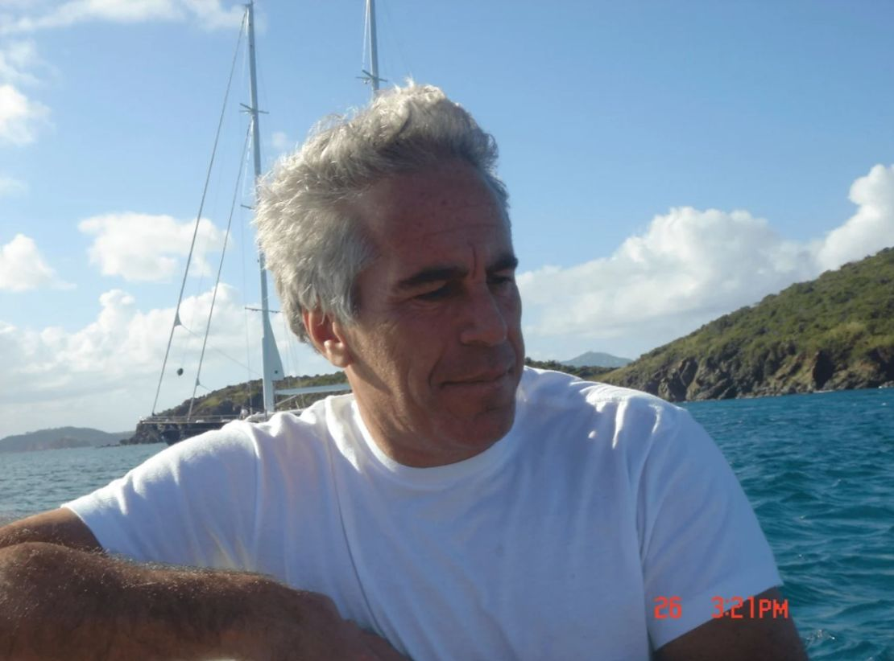
IMAGE_01
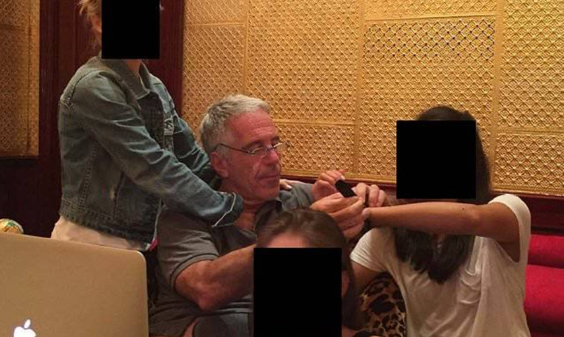
IMAGE_02
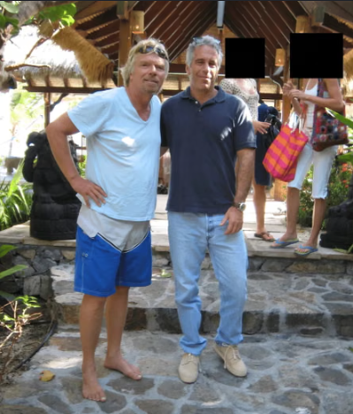
IMAGE_03
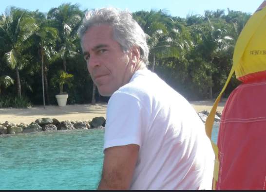
IMAGE_04
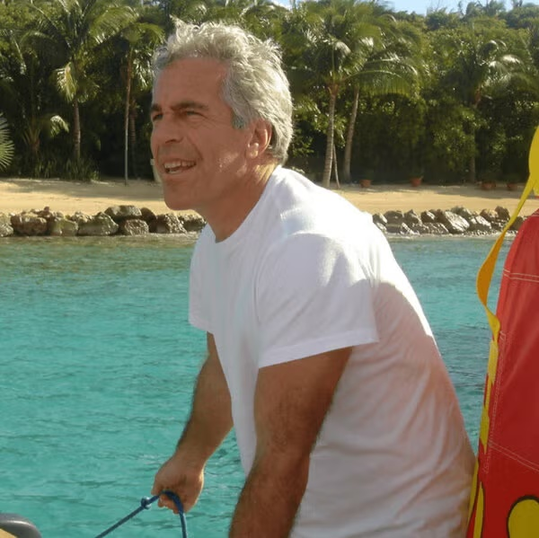
IMAGE_05
VIDEO ARCHIVE MEDIA LINKED TO THIS FILE
VIDEO ARCHIVE — WAITING FOR FILES
FILE 02 / TRAVEL ARCHIVE
GRUPOS TRADCIONALES DE LA ZONA
LOS DELTA TEAMS Los Delta Teams son una supuesta red criminal transnacional acusada de delitos de trata de personas, prostitución infantil y lavado de activos que operaba en Roatán, Islas de la Bahía.Según el informe del Ministerio Público, los detalles clave sobre esta estructura son:Operación y Modus OperandiFachadas comerciales: Utilizaban negocios locales en Roatán como The Dock Resort, Happy Harry's Hideaway e Ikigai para encubrir sus actividades ilícitas y lavar dinero.Explotación: Sometían a mujeres y menores de edad mediante violencia y coacción a redes de explotación sexual.Vínculos mediáticos: El grupo ha sido relacionado por medios locales con el sonado caso de la desaparición de la joven Angie Peña.
VISUAL ARCHIVE CLICK TO ENLARGE
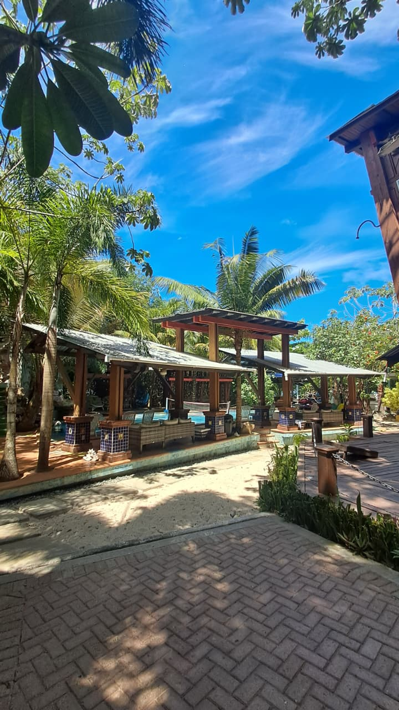
IMAGE_01
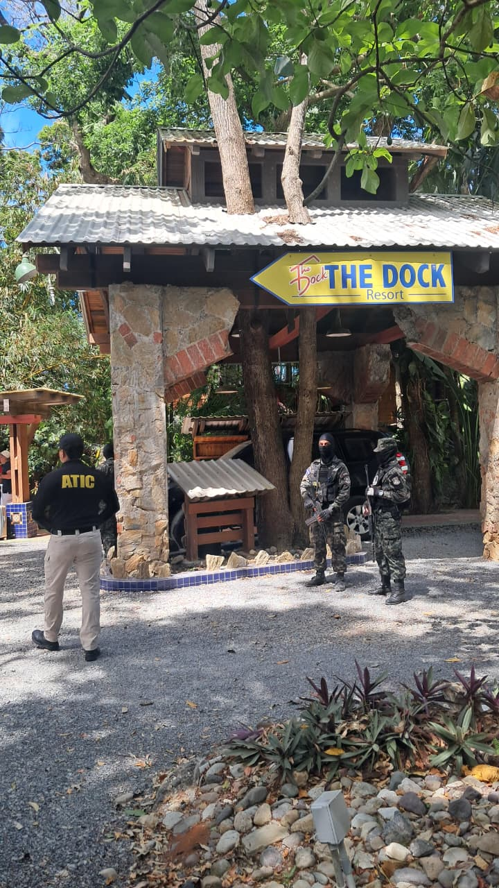
IMAGE_02
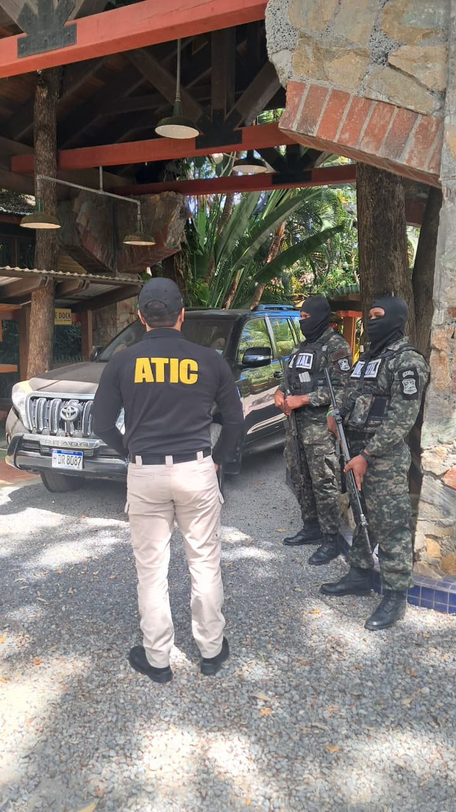
IMAGE_03
VIDEO ARCHIVE MEDIA LINKED TO THIS FILE
VIDEO ARCHIVE — WAITING FOR FILES
FILE 03 / TRAVEL ARCHIVE
UN LUGAR DE JUEGOS TRADICIONALES COMO EL ESCONDITE
Epidemia de desapariciones Mientras siguen apareciendo datos sobre las operaciones de tráfico sexual de Jeffrey Epstein en Centroamérica y México, información pública revela que Honduras registró 9,838 personas desaparecidas entre 2012 y 2022.
Así, en 2022 se reportaron 940 casos en los que el 30% de estas víctimas (282 personas) eran menores de 18 años.
Los casos mencionados se concentraron en cinco departamentos: Francisco Morazán tuvo 5,488, Cortés 1,908, El Paraíso 523, Yoro 354 y Atlántida 289.
Lo anterior sugiere que muchos menores desaparecidos provenían de estas zonas. Los epicentros fueron el Distrito Central (en Francisco Morazán) y San Pedro Sula (en Cortés).
Estos municipios registraron la mayor incidencia tanto de desapariciones como de homicidios. Así lo confirma el Portal Datos Abiertos en Seguridad Ciudadana.
VISUAL ARCHIVE CLICK TO ENLARGE
IMAGE_01
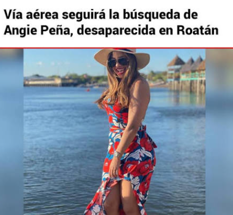
IMAGE_02
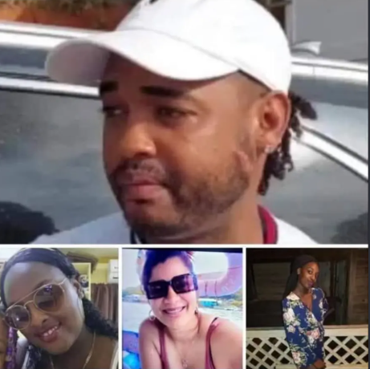
IMAGE_03
VIDEO ARCHIVE MEDIA LINKED TO THIS FILE
VIDEO ARCHIVE — WAITING FOR FILES
FILE 04 / TRAVEL ARCHIVE
UN LUGAR INCREÍBLE
Cómplice de Jeffrey Epstein elogiaba Roatán :“El área de baño es increíblemente hermosa…mejor que cualquier otra que haya visto en EE.UU. “
La mención de Roatán en los documentos desclasificados del caso de Jeffrey Epstein a principios de 2026 ha generado un fuerte eco en Honduras. Según los archivos liberados por el Departamento de Justicia de EE. UU., la isla y el país figuran en diversas comunicaciones y registros, aunque cabe aclarar que los archivos no establecen a Roatán como un escenario confirmado de crímenes de abuso o tráfico sexual cometidos por Epstein o sus asociados directos.
os documentos confirman correos electrónicos de 2013 entre Epstein y el psicólogo Stephen Alexander que mencionan planes de viaje a Roatán y encuentros posteriores en Estados Unidos.
Gran parte de las referencias provienen de correos de Ghislaine Maxwell, exnovia y cómplice del delincuente sexual Jeffrey Epstein, en los correos elogiaba centros turísticos locales de la isla.
En el correo se lee: “Trabajó durante un tiempo en las Islas de la Bahía frente a la costa de Honduras. El complejo está en la isla de Roatán… El área de baño es increíblemente hermosa y grande, y mucho mejor que cualquier otra que haya visto en EE. UU.”
Según los documentos publicados, el intercambio de correos electrónicos son de fecha 29 de marzo de 2004, enviado por Maxwell a su entonces novio Ted Waitt, empresario multimillonario. En el intercambio de E-mails, se hace referencia directa a Honduras y a la isla de Roatán, específicamente a un reconocido centro turístico de buceo y nado con delfines en Islas de la Bahía.
VISUAL ARCHIVE CLICK TO ENLARGE
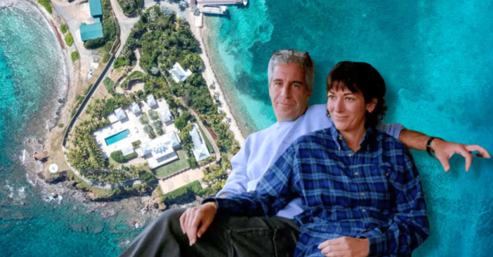
IMAGE_01
VIDEO ARCHIVE MEDIA LINKED TO THIS FILE
VIDEO ARCHIVE — WAITING FOR FILES
FILE 05 / TRAVEL ARCHIVE
DESTINO TURÍSTICO HERMOSO
Asesinan a balazos a hijo de reconocida abogada en Roatán
Roatán, Islas de la Bahía. Un hombre identificado preliminarmente como Dereck McNeil, hijo de la reconocida abogada Claudette Ofelia McNeil, fue asesinado a balazos este lunes en las cercanías de la Departamental de Educación de Roatán, Islas de la Bahía.
El crimen ocurrió mientras la víctima se conducía en su carro. Según los primeros reportes, sujetos armados se acercaron al automóvil y dispararon en repetidas ocasiones.
Varios impactos de bala atravesaron el cristal del vehículo y alcanzaron a Dereck Mcneil, quien intentó salir del automóvil para ponerse a salvo.
Sin embargo, su cuerpo quedó tendido a un costado del carro, donde fue encontrado sin vida. De acuerdo con información preliminar, al menos dos individuos que se movilizaban en una motocicleta estarían vinculados con el crimen. Esta versión deberá ser confirmada por las autoridades a medida que avancen las investigaciones.
Familiares de la víctima llegaron hasta la escena del crimen tras enterarse de lo ocurrido. En medio del dolor, permanecieron cerca del cuerpo mientras las autoridades realizaban las diligencias correspondientes.
El crimen ocurrió en medio de la lluvia, mientras el cuerpo de Dereck permanecía a un costado de la vía. Sus familiares colocaron una cubierta sobre él mientras esperaban que concluyeran las diligencias de las autoridades.
Hasta el momento no se ha establecido el móvil del asesinato ni se han reportado capturas relacionadas con el caso.
VISUAL ARCHIVE CLICK TO ENLARGE
IMAGE_01
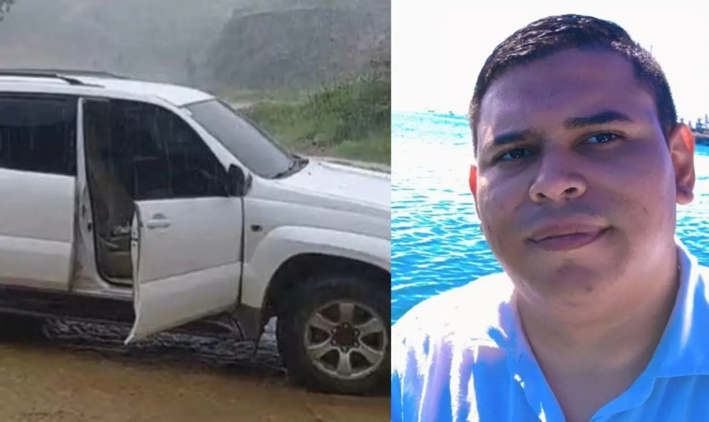
IMAGE_02
VIDEO ARCHIVE MEDIA LINKED TO THIS FILE
VIDEO_01
VIDEO_02
FILE 06 / TRAVEL ARCHIVE
FAMA MUNDIAL DE NUESTRA BELLA ROATAN
El nombre de Honduras aparece 164 veces, mientras que el de Roatán en al menos 12 ocasiones dentro de documentos relacionados con el caso de Jeffrey Epstein, según una revisión de archivos judiciales, correos electrónicos y registros liberados en Estados Unidos como parte de procesos de transparencia vinculados a una de las investigaciones criminales más polémicas de las últimas décadas.
Las menciones no implican, por sí solas, acusaciones directas contra el país ni contra autoridades hondureñas, pero sí revelan referencias recurrentes a Honduras en distintos contextos, que van desde intercambios de correos privados, menciones geográficas, hasta análisis políticos y económicos incluidos en documentos asociados al entorno de Epstein y sus contactos.
Correos y referencias a Roatán Entre los documentos revisados figura un intercambio de correos electrónicos fechado el 29 de marzo de 2004, enviado por Ghislaine Maxwell, colaboradora cercana de Epstein, a Ted Waitt, donde se hace referencia directa a Honduras y a la isla de Roatán, específicamente a un reconocido centro turístico de buceo y nado con delfines en Islas de la Bahía.
En el correo se lee: "Trabajó durante un tiempo en las Islas de la Bahía frente a la costa de Honduras. El complejo está en la isla de Roatán… El área de baño es increíblemente hermosa y grande, y mucho mejor que cualquier otra que haya visto en EE. UU."
En otro fragmento del intercambio, Maxwell escribe de forma irónica:
"Cerca de Honduras — ¿huelo a guerrillas? ¿terroristas? ¿mi tipo de lugar?"